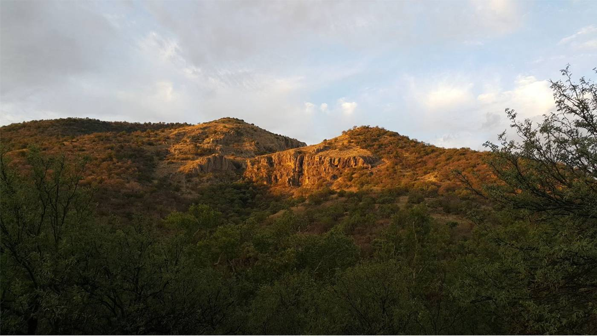
Yacimiento Selene
Depósito sur. De aquí salió la muestra que un comprador industrial validó en pruebas de laboratorio en China para fabricación de arena para gatos.
- Ubicación
- Sur del arroyo Babidanchi
- Estatus
- Muestreado y analizado
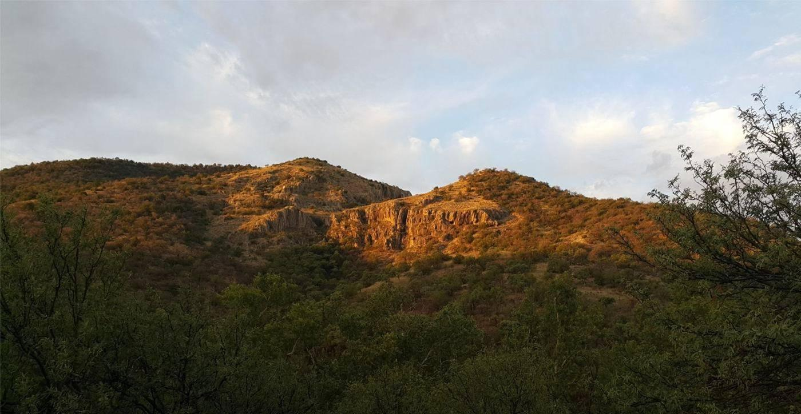
Huachinera, Sonora · México
El Rancho Babidanchi alberga dos depósitos de perlita de alta calidad sobre tierra de una sola familia. La perlita no es un mineral concesible en México: aquí no hay concesión de por medio ni tercero con derechos sobre el material.
El recurso
Los estudios geológicos concluyen que ambos yacimientos se formaron en un solo evento volcánico, con dos puntos de emisión distintos. Están dentro del mismo rancho, separados por el arroyo Babidanchi, y la evidencia apunta a un domo perlítico único con varias salidas a la superficie: es decir, es posible que estén unidos en el subsuelo.

Depósito sur. De aquí salió la muestra que un comprador industrial validó en pruebas de laboratorio en China para fabricación de arena para gatos.
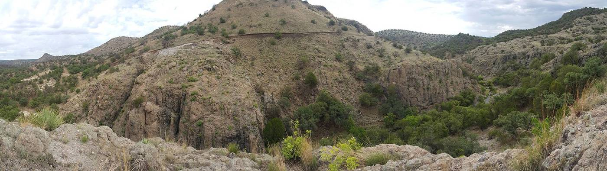
Depósito norte. Cuenta con barrenación en 3.5 hectáreas del margen izquierdo del arroyo, además del mapeo geológico de superficie del resto del área.
En 2016 se expandieron once muestras de ambos yacimientos en el laboratorio del New Mexico Bureau of Geology & Mineral Resources, recreando las condiciones de un horno industrial a 704 °C sin precalentamiento. Estos son los resultados publicados en el informe de reconocimiento geológico:
| Parámetro | Resultado Babidanchi | Qué significa |
|---|---|---|
| Índice de expansión aparente | 20 – 43 × | Relación entre la densidad del mineral crudo y la del expandido, en la fracción −50 +100 |
| Densidad expandida | 1.34 – 2.79 lb/ft³ | Entre 21 y 45 kg/m³. Un producto muy ligero |
| Rendimiento de horno | 84 – 93 % | Proporción del material que expande correctamente |
| Impurezas | desde 0.67 % | Material que no expande. Un valor bajo es un indicador de pureza |
| Pérdida por calcinación (LOI) | 4 – 6 % | Contenido de volátiles. A menor LOI, mayor expansión |
La muestra PB16-29B, del yacimiento La Bendición, registró un brillo alto, una densidad expandida de 1.34 lb/ft³ y solo 0.67 % de impurezas: mejores resultados que la perlita Socorro que el propio laboratorio usa como estándar de referencia.
Vidal Solano, J.R. e Hinojosa García, H.J. (2016). Informe de reconocimiento geológico y evaluación económica preliminar, Tablas 3 y 4. Ensayos: New Mexico Bureau of Geology & Mineral Resources.
La alta expansión se relaciona con la ausencia casi total de fenocristales en la roca y con el bajo contenido de volátiles. Como referencia, las fuentes públicas sitúan la expansión de la perlita comercial entre 4 y 20 veces su volumen: el reporte técnico del Departamento de Agricultura de Estados Unidos (USDA, 2024) señala "hasta 20 veces". El índice de Babidanchi es más alto porque se mide sobre la fracción fina y contra la densidad del mineral crudo, y porque la perlita expandió a una densidad muy baja: 21–45 kg/m³, propia de grado criogénico y no de grado hortícola, que es contra el que suele calcularse ese rango.
Las reservas mínimas de 5.2 millones de toneladas son la suma de dos trabajos independientes. Consultoría Geológica GV confirmó 1,244,784.82 m³ de reservas probadas mediante mapeo a detalle, cinco barrenos y topografía en 3.5 hectáreas del yacimiento norte; a una densidad in situ de 2.3 t/m³ equivalen a 2,863,005 t. Vidal Solano e Hinojosa García estimaron 2,337,628 t adicionales a la vista, sobre superficie distinta.
La cifra es conservadora por dos razones: no incluye las 926,398.63 m³ de reservas probables que el mismo estudio de Consultoría Geológica GV reporta —otros 2.1 millones de toneladas—, y no incluye nada del volumen profundo del domo.
Los 80.7 millones de toneladas de recursos geológicos provienen de la tesis de Almazán Holguín y Trelles Monge (1986), que estimó el volumen del domo completo. Es una estimación, no una reserva certificada.
Aún no existe un reporte de recursos bajo norma NI 43-101 o JORC. Levantar ese reporte es parte de lo que se contempla con el socio o comprador que entre al proyecto.
Cómo se suman las 5.2 Mt
Densidad in situ de 2.3 t/m³ en todas las conversiones. El recurso geológico es una estimación de 1986 sobre el volumen del domo completo, no una reserva certificada.
El mineral
Un vidrio volcánico que, al calentarse, se convierte en un material blanco, poroso y extraordinariamente ligero. Si no conoce el mineral, esta sección es el punto de partida.
La perlita pertenece a la familia de los vidrios silíceos amorfos. Se forma cuando la lava rica en sílice se enfría con rapidez y atrapa pequeñas cantidades de agua dentro de su estructura vítrea. El nombre viene de su aspecto: las partículas sin expandir presentan fracturas concéntricas que recuerdan a perlas.
La perlita cruda contiene entre 2 % y 5 % de agua. Al calentarla entre 760 °C y 1,100 °C, la estructura de silicato se reblandece y el agua atrapada se convierte en vapor, que infla la masa viscosa como una espuma de burbujas de vidrio. El resultado ocupa muchas veces el volumen original y no se puede revertir.
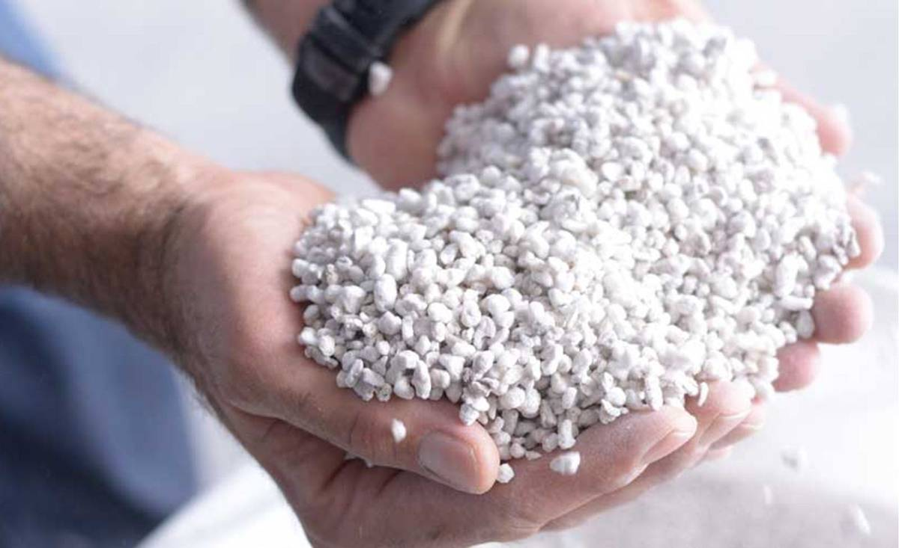
Entre 32 y 240 kg/m³ según el grado de expansión. Reduce el peso de morteros, concretos y sustratos sin sacrificar volumen.
Su estructura celular retiene aire, lo que frena la transferencia de calor y de sonido. Se usa desde muros y techos hasta tanques criogénicos.
Es un vidrio volcánico: no arde ni aporta carga de fuego, y resiste temperaturas extremas. Se emplea en protección pasiva contra incendio.
Químicamente no reactiva, de pH neutro y libre de patógenos. Por eso se admite en filtración de alimentos, bebidas y productos farmacéuticos.
| Industria | Aplicación |
|---|---|
| Construcción | Agregado ligero para concretos y morteros, yesos aislantes, paneles y placas, aislamiento de cavidades, protección contra fuego |
| Horticultura y agricultura | Sustratos y mejoradores de suelo: airea la raíz y retiene humedad sin compactarse |
| Filtración industrial | Ayuda-filtrante en cerveza, vino, jugos, aceites comestibles, jarabes, agua y productos farmacéuticos |
| Criogenia e industria | Aislamiento de tanques de gases licuados, moldes de fundición, abrasivos suaves, absorbentes |
| Consumo | Arena sanitaria para mascotas, absorbentes de derrames, cargas ligeras |
El mercado
Es el dato que explica el proyecto. Estados Unidos es el cuarto productor mundial de perlita y, aun así, tiene un déficit permanente: cerca del 23 % del mineral que consume tiene que comprarlo fuera del país, y el 94 % de esas compras cruza el Atlántico desde Grecia.
| Concepto | 2021 | 2023 | 2025e |
|---|---|---|---|
| Producción minera (mineral crudo) | 879 | 654 | 730 |
| Perlita procesada vendida o usada | 491 | 410 | 460 |
| Importaciones para consumo | 170 | 140 | 160 |
| Precio promedio (USD por tonelada) | $64 | $74 | $78 |
| Dependencia de importaciones | 23 % | 23 % | 23 % |
94 %
de las importaciones estadounidenses de perlita provienen de Grecia, y un 3 % de China. Llegan por barco a los puertos de la costa este. El resto del mundo aporta el 3 % restante.
Miles de toneladas métricas. México no figura entre los productores registrados.
Fuente de todas las cifras de mercado: U.S. Geological Survey, Mineral Commodity Summaries 2026, capítulo Perlite. Las cifras de 2025 son estimaciones del propio USGS. Origen de las importaciones: promedio 2021–2024.
Situación jurídica
Aquí no hay concesión que pueda vencerse.
La Ley Minera mexicana enumera de forma cerrada las sustancias sujetas a concesión federal. La perlita no aparece en esa lista, y por eso pertenece al dueño del terreno donde se encuentra.
Artículo 4. Lista cerrada de sustancias concesibles. La perlita no está en ella.
Artículo 5, fracciones IV y V. Excluye de la Ley las rocas para materiales de construcción y las extraídas a cielo abierto, que es el método propio de la perlita.
La consecuencia. Ninguna concesión que venza, se cancele o se dispute. Ningún tercero con derechos preferentes. Ningún pago por materia prima: el rancho es de los socios de la empresa.
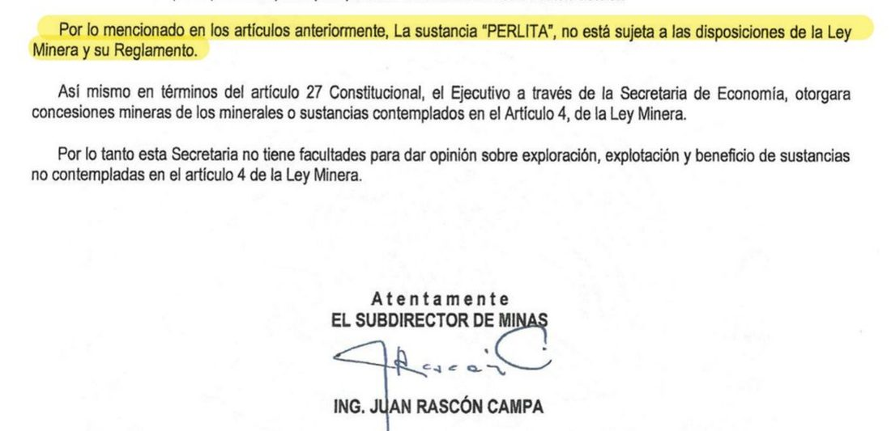
Ubicación y logística
Estados Unidos importa perlita cruda procesada principalmente desde Grecia, en barco, hacia puertos de la costa este. El Rancho Babidanchi está en tierra firme, a un día de camión de la frontera.
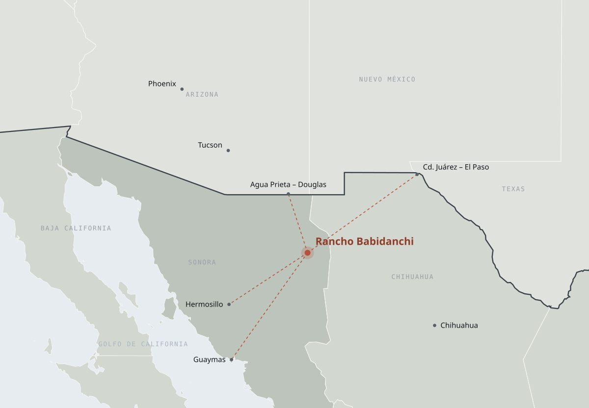
| Destino | Distancia | Vía |
|---|---|---|
| Frontera Agua Prieta – Douglas, Arizona | 218 km | Carretera |
| Hermosillo, Sonora | 267 km | Carretera · enlace ferroviario intermodal |
| Frontera Ciudad Juárez – El Paso, Texas | 367 km | Carretera · centro ferroviario de carga |
| Puerto de Guaymas, Sonora | 429 km | Carretera · salida marítima |
Desde el rancho se accede por carretera a Douglas, Tucson y Phoenix, en Arizona; y hacia el este a El Paso, Texas, donde se encuentra uno de los mayores centros ferroviarios de carga de Estados Unidos, con espuela de ferrocarril para las plantas de expansión del sureste.
Hacia el sur, Hermosillo y el puerto de Guaymas abren la salida marítima a los mercados de Europa, Asia y Sudamérica, y permiten competir en el mismo segmento de importaciones que hoy atienden los embarques griegos.
El acceso al rancho es por diez kilómetros de camino de terracería en buen estado desde la localidad de Aribabi, que conecta con carretera pavimentada.
El lugar
En ópata, babi es beber y danchi correr: el lugar donde corre el agua. El nombre no es casual.
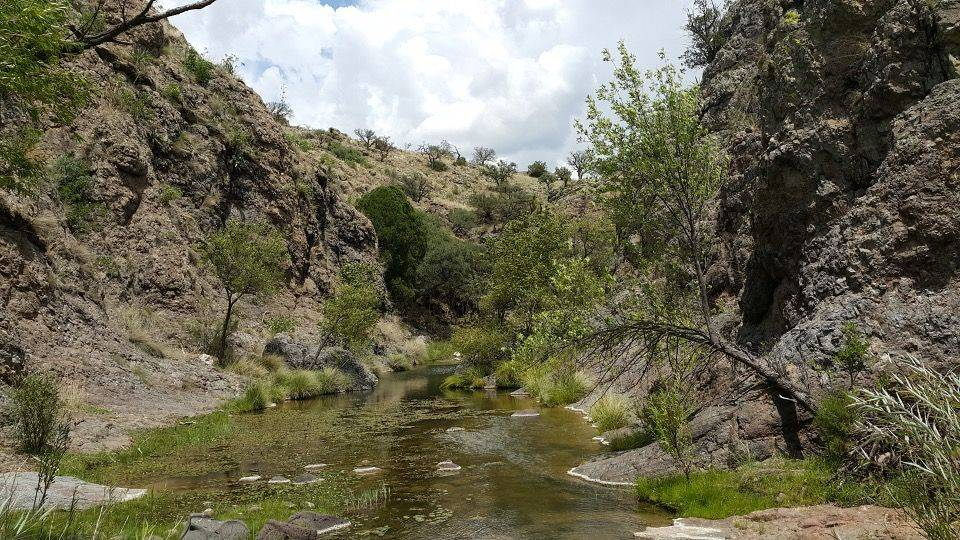
Un arroyo perenne de agua de manantial atraviesa el rancho: corre los doce meses del año. El predio cuenta además con una concesión de aguas nacionales del subsuelo por 5.6 millones de metros cúbicos anuales —título SON124116, inscrito en el Registro Público de Derechos de Agua de la Comisión Nacional del Agua— y con la infraestructura de aprovechamiento ya construida en sitio.
El aprovechamiento se ubica dentro del acuífero 2631 Río Bavispe. En su estudio oficial de disponibilidad, la Comisión Nacional del Agua reporta para ese acuífero una recarga de 29.7 millones de metros cúbicos anuales frente a una extracción de 15.2 millones, con disponibilidad positiva y déficit cero.
Para un proyecto minero, tener agua corriente todo el año, concesionada y registrada, sobre un acuífero que la autoridad no declara sobreexplotado, es una condición que rara vez viene resuelta de antemano.
La concesión, en corto
Cifras del acuífero: Comisión Nacional del Agua, estudio de determinación de disponibilidad del acuífero 2631 Río Bavispe. El número de título es verificable en el REPDA.
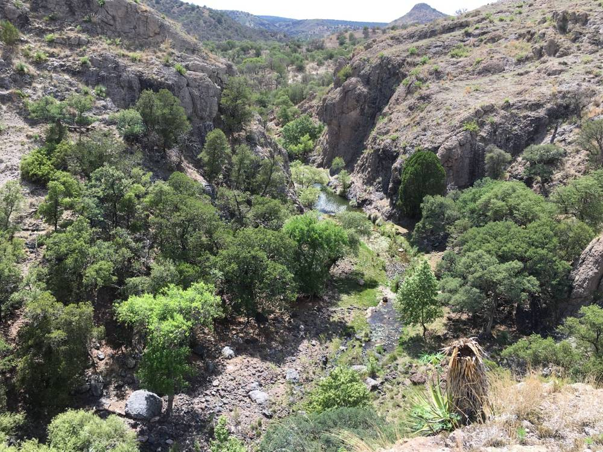
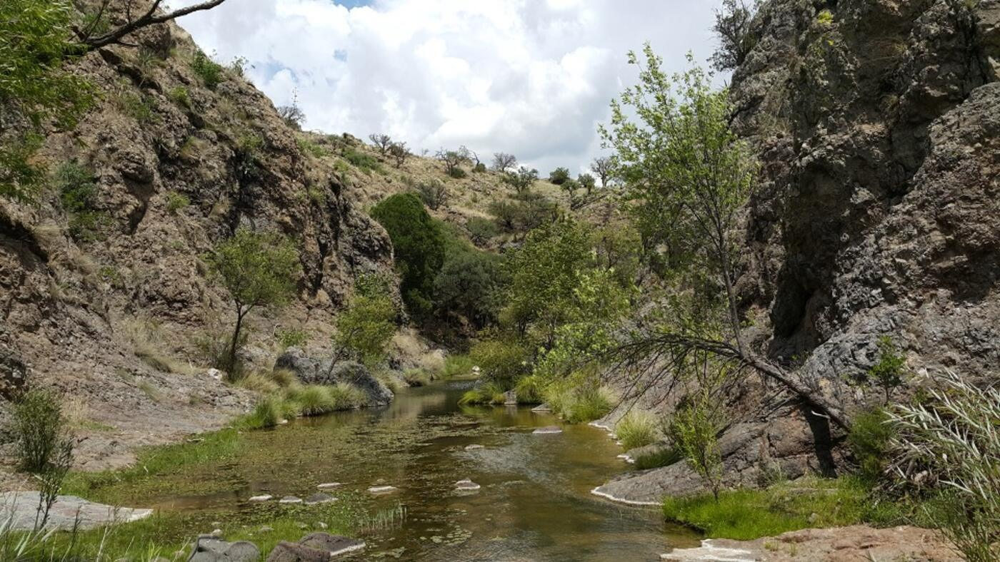
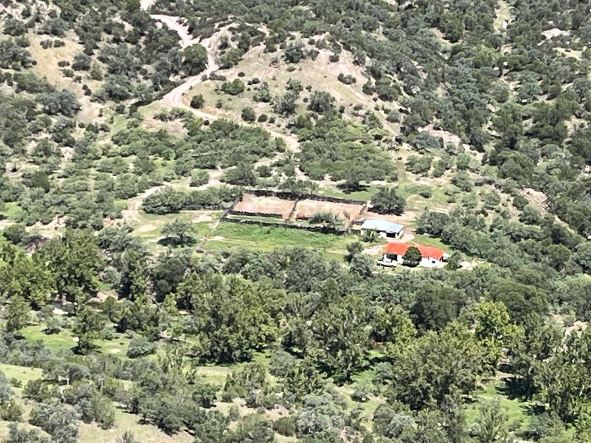
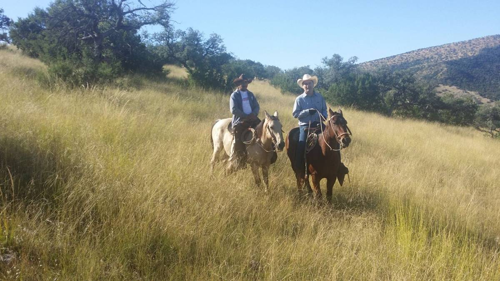
El rancho es una operación ganadera en funcionamiento, no un terreno baldío. Un proyecto que entre aquí no empieza desde cero:
Casa amueblada con energía solar, bodega, corrales, patios, oficina, depósito de agua y señal telefónica.
Caminos internos en operación y diez kilómetros de terracería en buen estado hasta la carretera pavimentada. Para tráiler está proyectado un camino nuevo de siete kilómetros.
El sitio previsto para la planta de trituración está a menos de dos kilómetros de los yacimientos y a siete de la carretera pavimentada.
Tajo a cielo abierto. El mineral aflora en superficie y es blando: se tumba y se extrae con buldócer, sin voladura ni obra subterránea.
Personal de Aribabi y Huachinera, que regresa a su domicilio a diario. Sin costos de campamento ni de logística de personal.
Región Sierra Alta de Sonora, con presencia permanente de la Guardia Nacional en Bavispe y Moctezuma, a 62 y 93 kilómetros.
Evidencia técnica
Cuatro décadas de trabajo geológico sobre el mismo depósito, más los documentos oficiales que respaldan la situación jurídica y el agua. Todos se abren en una pestaña nueva, para leerlos en línea o descargarlos.
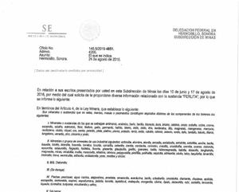
Secretaría de Economía. Confirma por escrito que la perlita no está sujeta a la Ley Minera.
PDF · 2 páginas · 2016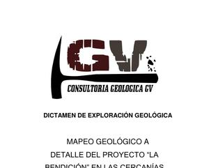
Consultoría Geológica GV. Mapeo a detalle con 84 estaciones de campo georreferenciadas.
PDF · 27 páginas · 2015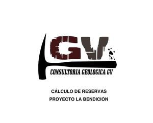
Consultoría Geológica GV. Cinco barrenos, topografía independiente y cálculo volumétrico.
PDF · 7 páginas · 2016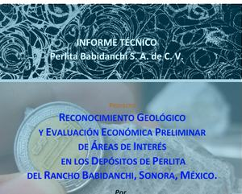
Vidal Solano e Hinojosa García, Universidad de Sonora. Petrografía, geoquímica y las pruebas de expansión de esta página.
PDF · 114 páginas · 2016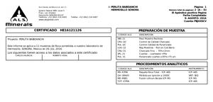
ALS Chemex de México. Once muestras por ICP-AES e ICP-MS: elementos mayores, traza y tierras raras.
PDF · 6 páginas · 2016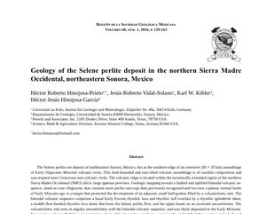
Artículo arbitrado, Boletín de la Sociedad Geológica Mexicana, volumen 68. La validación académica independiente.
PDF · 35 páginas · 2016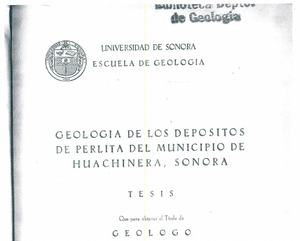
Tesis de licenciatura de Almazán Holguín y Trelles Monge, Universidad de Sonora. Origen de la estimación de recursos del domo.
PDF · 86 páginas · 1986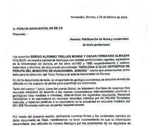
Ambos autores ratificaron por escrito. Trelles Monge está certificado como geólogo profesional N.º 10304 por el American Institute of Professional Geologists.
PDF · 1 página · 1988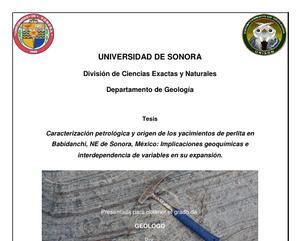
Tesis de Melgarejo Joris, Universidad de Sonora. Variables que gobiernan la expansión del mineral.
PDF · 140 páginas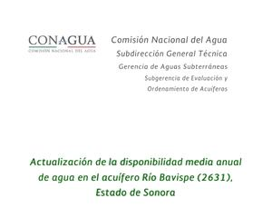
Comisión Nacional del Agua. Recarga de 29.7 millones de m³ anuales frente a una extracción de 15.2 millones, con déficit cero.
PDF · 34 páginas · 2009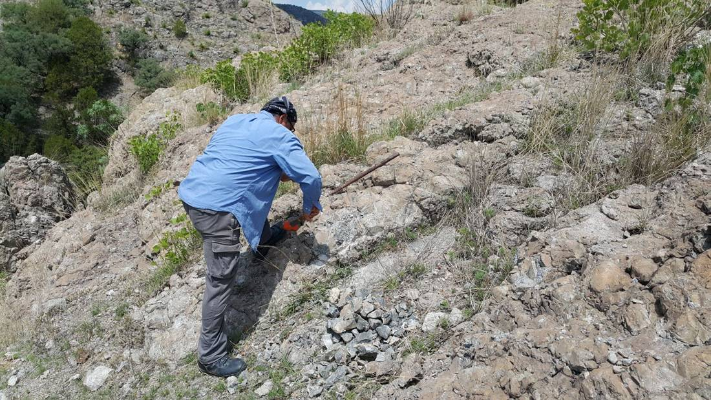
Qué buscamos
Somos una empresa familiar. El activo está listo y documentado; lo que no tenemos es el capital para arrancar la operación. Estas son las dos estructuras que mejor encajan con el estado actual del proyecto.
El interesado financia la barrenación y el reporte de recursos certificado durante un plazo acordado, con derecho a comprar a un precio pactado si decide ejercerlo.
Resuelve lo único que hoy le falta al proyecto —la certificación bajo norma— sin que ninguna de las dos partes quede comprometida de antemano.
Un tercero opera y paga una renta más una regalía por tonelada extraída. La familia conserva la propiedad de la tierra y del mineral.
Es la figura habitual para minerales industriales sobre propiedad privada, y encaja aquí precisamente porque la perlita no es concesible.
También evaluamos contrato de suministro de perlita cruda procesada —ya hemos recibido cartas de intención de compradores en México y Estados Unidos—, asociación con un socio operador o financiero, capital de arranque para la extracción y la planta, o la venta del activo completo o de una participación accionaria.
Galería
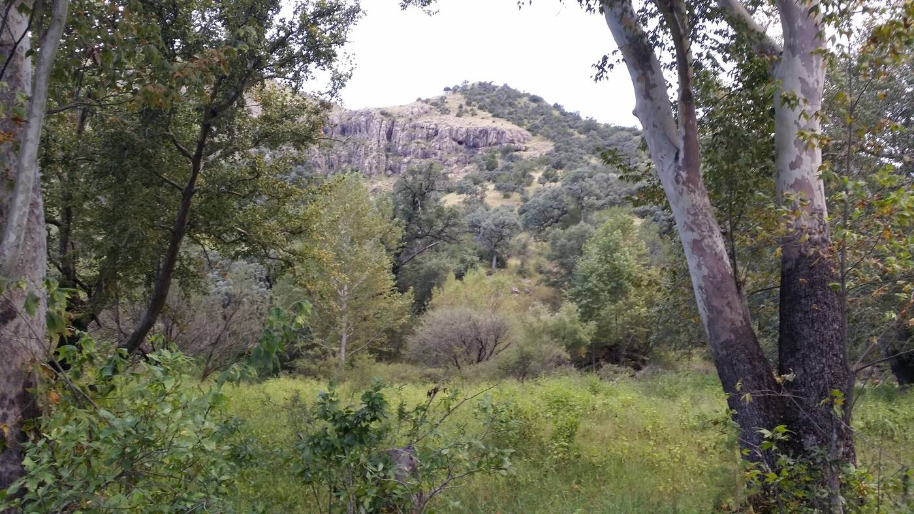
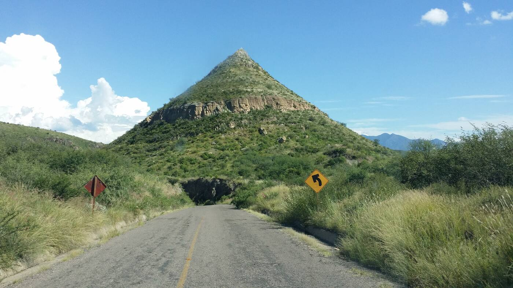
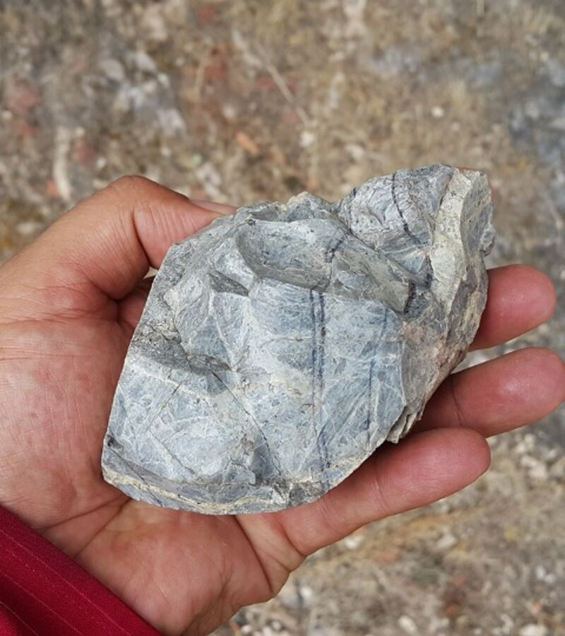
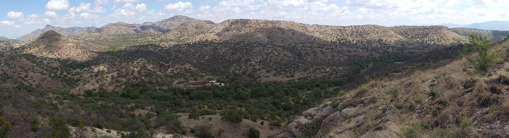
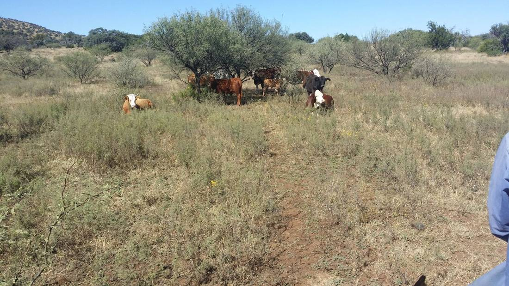
Contacto
Si el proyecto le interesa, escríbanos. Compartimos el expediente técnico completo —estudios geológicos, análisis de laboratorio y documentación legal— bajo acuerdo de confidencialidad.